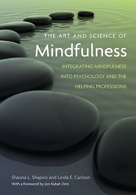

Live in the moment.Enjoy life with the full
Begin doing what you want to do now . We are not living in eternity . We have only this moment,sparkling like a star in our hand,and melting like a snowflake.
More than twenty years ago,Jon Kabat-Zinn changed the way we thought about awareness in every life with his now classic introduction to mindfulness.Wherever You Go,There You Are. He followed that up with 2005's Coming to Our Senses ,the definitive book for our time on the connection brtween mindfulness and our well being every level,physical,congnitive ,socail,planetary,and spiritual
.jpeg)
Teach your kids how to foucs their thoughts and notice the world around them with this fun mindfulness kids activity book.Mindfulness activitys are a great way to teach children about their thoughts and feelings and how to understand them - while having fun at the same time.
Our intention is to clearly define mindfulness and its role in psychotherapy and health care, exploring it as an empirically supported clinical intervention across a wide range of populations, a means of fostering self-care for helping professionals, and a catalyst for going beyond the professions focus on pathology to include positive growth and development.
other books of mindfulness.